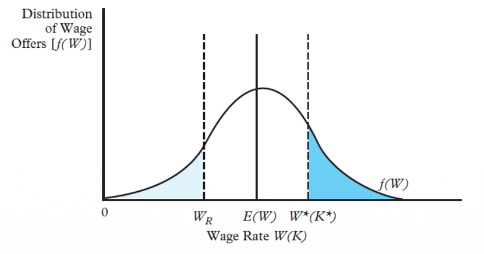
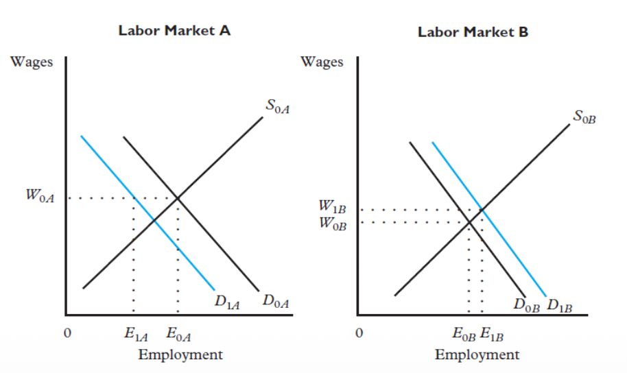
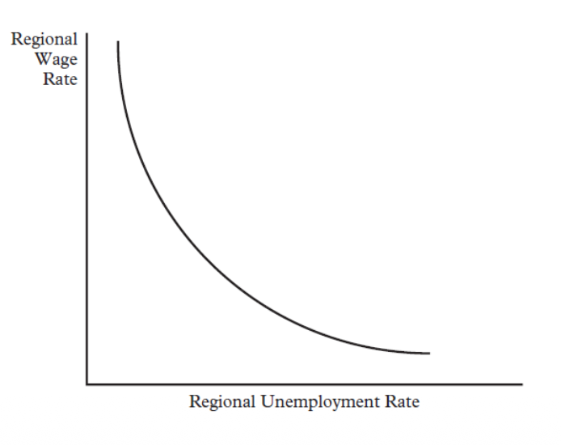
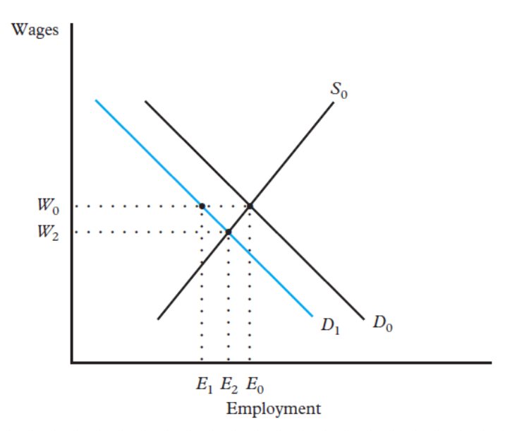

9. Analysis of Employment & Unemployment
🧠 I. Motivation: Why Study Unemployment?
Understanding unemployment is one of the most fundamental challenges in labour economics. What determines the level of employment and unemployment in the economy? The textbook answer is deceptively simple: labour supply, labour demand, and unemployment conceived as voluntary leisure. But this simplistic view fails catastrophically when confronted with the real world.
Beyond the Textbook: The Real Drivers
The reality is far more complex. Modern labour economics identifies several powerful forces that the basic supply-demand model completely ignores:
- Labour market frictions: Finding a job is not instantaneous. It takes time, effort, and money. Workers and firms must search for each other in a world of imperfect information, and this process itself generates unemployment.
- Incentive problems & efficiency wages: Firms deliberately set wages above the market-clearing level to motivate workers, reduce shirking, and lower turnover. This rational strategy paradoxically creates involuntary unemployment at the aggregate level.
- Wage rigidities & bargaining: Wages do not adjust freely. Unions, contracts, fairness norms, and insider-outsider dynamics prevent wages from falling even when unemployment is high. As a result, prices do not clear the market.
- Search and matching: The costly, time-consuming process by which workers find the "right" jobs and firms find the "right" workers is at the very heart of modern unemployment theory.
🚨 Work & Well-Being
Work is one of the key drivers of human well-being. Research consistently shows that unemployment is one of the most powerful factors reducing individual happiness — even more than divorce or significant income loss. The psychological costs of joblessness (loss of identity, social isolation, erosion of skills, stigma) go far beyond the loss of income. This is why understanding the measurement, causes, cross-country patterns, and differences across socio-demographic groups is not just an academic exercise — it is a matter of social urgency.
📊 II. Measurement: Defining & Counting Unemployment
Before we can analyze unemployment, we must first define it rigorously. This is far more difficult than it seems, because the definition itself shapes what we measure. Different institutions use different definitions, and each definition captures a slightly different reality.
The Core Formula
Both the numerator (who counts as "unemployed"?) and the denominator (who counts as part of the "labour force"?) are subject to definitional choices that have enormous consequences for the number we get.
The ILO Definition (International Standard)
ILO Definition of Unemployment
According to the International Labour Organization (ILO), a person is classified as unemployed if and only if all three conditions are simultaneously met during the reference period:
- Without work: The person was not in paid employment or self-employment during the reference period. This is a binary condition — even one hour of paid work disqualifies the person from being counted as "unemployed."
- Currently available for work: The person was available for paid employment or self-employment during the reference period. This means they could realistically start working if offered a job. Someone on extended medical leave or caring for a dependent who cannot possibly start work is excluded.
- Actively seeking work: The person has taken specific, concrete steps to find employment — such as contacting employers, answering job advertisements, registering at employment offices, or attending interviews. Simply "wanting" a job is not enough.
This definition is used by Eurostat and the Czech Statistical Office (ČSÚ) in the Labour Force Survey (LFS), making cross-country comparisons possible across the EU.
⚠️ The Czech Ministry's Alternative Definition
The Czech Ministry of Labour and Social Affairs (MPSV) uses a different indicator: the Share of Unemployed Persons. This measures the share of available job seekers aged 15–64 out of all inhabitants of this age. Note the critical difference: the denominator is the entire working-age population, not just the labour force. This gives a structurally lower figure than the ILO-based unemployment rate, because the denominator is much larger. Never confuse the two in an exam.
The Employment Rate
This reveals the exact proportion of the working-age population that is actually engaged in productive employment. Unlike the UR, it is not affected by movements between unemployment and inactivity.
Labour Market Status & Population Structure
Who is "Employed"? — The ILO Standard
Employed persons are those of working age who, during a short reference period, were engaged in any activity to produce goods or provide services for pay or profit. This includes both self-employed and wage-employed workers. The definition is surprisingly broad and includes two sub-categories:
- (a) Employed persons "at work": Those who worked in a job for at least one hour during the reference period. Yes — even one single hour of paid work counts as "employment." This extremely low threshold means that many people we would intuitively consider "unemployed" or "underemployed" are statistically classified as employed.
- (b) Employed persons "not at work": Those temporarily absent from a job due to illness, maternity leave, vacation, or working-time arrangements (e.g., short-time work schemes, furlough). Crucially, these individuals are still counted as employed because they retain their employment contract.
🔄 The Labour Market as a Circulation System
Employed
Working or temporarily absent from job
Unemployed
Without work, available, actively seeking
Out of Labour Force
Students, retirees, discouraged, caregivers
Labour Force = Employed + Unemployed = 5,412 thous.
Population aged 15+ = Labour Force + Out of LF = 8,963 thous.
Understanding the Flows (Arrows)
People are constantly moving between these three states. Every arrow in the system represents a flow of individuals:
- Employed → Unemployed: Layoffs, dismissals, end of contract, voluntary quits. This is the classic "job destruction" flow.
- Unemployed → Employed: New hires, job finding. This is the "job creation" flow and is measured by the probability $P_{ue}$.
- Employed → Out of LF: Retirement, family withdrawal, health-related exits, discouraged workers leaving.
- Out of LF → Employed: Direct re-entry (e.g., a student gets a job immediately after graduation).
- Unemployed → Out of LF: Discouraged workers who stop searching. They disappear from the unemployment count without finding a job.
- Out of LF → Unemployed: New entrants or re-entrants who begin searching for work.
Critical insight: Unemployment is not static. It is constantly being reshaped by job destruction, job creation, entries and exits. A low unemployment rate does NOT mean a calm labour market — it can hide enormous movement underneath.
🗺️ III. Understanding Unemployment Patterns
When we look at unemployment data across Europe, across time, and across demographic groups, several fundamental patterns emerge. Each pattern reveals a different layer of the unemployment puzzle.
1. Spatial Inequality: The Map View
Unemployment rates vary enormously across European regions. Some areas consistently maintain very low unemployment (under 3%), while others are trapped in persistent double-digit unemployment. If unemployment were driven purely by the business cycle, countries and regions would look much more similar. But they don't.
This immediately tells you that something deeper is at work: structural unemployment. Behind these regional disparities lie several interconnected mechanisms:
- Economic structure: Some regions have more productive firms, more diversified industries, and greater job creation capacity. Others rely on fragile, seasonal, or declining sectors, so the demand for labour is not the same everywhere.
- Skills and spatial mismatch: Workers and jobs do not perfectly align. Skills don't match what firms need, jobs are in different locations than workers, some sectors decline while others expand. Even if jobs exist, they are not accessible to everyone. This is why unemployment can remain high even without a massive lack of job openings.
- Institutional efficiency: Some labour markets allow fast transitions — people lose jobs but find new ones quickly, firms hire easily, mobility is high, and matching is efficient. In others, the system is rigid — hiring and firing are costly, mobility is limited, markets are segmented, and transitions are slow. This reduces the probability of leaving unemployment.
What you see on the maps is not random — it reflects how efficiently each labour market transforms job seekers into employees. Always think in layers: short-term cycle, long-term structure, regional differences, and group heterogeneity.
2. The Time Series View: Cyclical Movements
When you look at unemployment over time (e.g., EU or Euro Area series), you see a characteristic pattern: long increases, then declines, then sudden spikes (2008, 2020), then recovery. The EU and Euro Area lines move almost identically but one is slightly higher — indicating common shocks but different structural compositions.
This is the textbook case of cyclical unemployment. During recessions, firms face lower demand → they reduce hiring → they may lay off workers. So inflows into unemployment increase, outflows decrease, and unemployment rises. During recovery, the reverse happens. The Covid-19 shock is a perfect example of an external shock that caused activity to collapse, labour demand to drop sharply, and unemployment to jump — then recover as the economy reopened.
A crucial observation: unemployment can move a lot even if workers themselves do not change. It is not just about individual characteristics — it is heavily driven by macroeconomic demand conditions.
Even when the economy improves dramatically, unemployment never goes to zero. There are always frictions, search processes, imperfect information, people changing jobs, new entrants, and temporary mismatches. This residual level is exactly the natural rate of unemployment.
3. Youth Unemployment: The Amplifier Effect
Youth unemployment is not just higher than total unemployment — it behaves like an amplified version. Whenever the economy deteriorates, youth unemployment reacts much more violently than adult unemployment. It shoots up faster in recessions and recovers more slowly.
- New entrants with weak signals: Young workers are typically new to the labour market. They have less experience, less information, and fewer credible signals of productivity. The matching process is inherently harder for them — this is frictional unemployment, but more intense.
- Outsiders in the insider-outsider framework: Firms tend to protect experienced workers who are already inside — those with permanent contracts and firm-specific human capital. Young people are not yet protected. When firms need to adjust, they reduce hiring, cut temporary positions, and delay entry. Young workers absorb a disproportionate share of the adjustment.
- Unstable employment contracts: Young workers are more likely to be on short-term contracts, probation periods, or part-time positions. So they are structurally more exposed to any economic shock.
- Complex job search trade-offs: They face a critical choice: accept a low-quality job quickly, or wait for a better opportunity? This links directly to the job search model — their unemployment is not only about "not finding a job" but also about finding the right job while navigating imperfect information and early career uncertainty.
Youth unemployment reveals the insider-outsider mechanism in action. Young workers are not unemployed because they are "lazy" — they are structurally disadvantaged by their position in the labour market hierarchy.
4. The Hidden Dimension: Duration
Why Duration Changes Everything
Two labour markets can have identical unemployment rates but represent completely different realities:
🔄 Dynamic Market
Many people become unemployed, but they quickly find jobs again. High inflows AND high outflows. Short average duration. The market is churning — painful for individuals but structurally healthy.
🔒 Rigid Market
Fewer people enter unemployment, but those who do stay trapped for a very long time. Low inflows but extremely low outflows. Duration is long. Long-term unemployment becomes common — a strong signal of deep structural problems.
The longer someone is unemployed, the harder it becomes to find a job: skills depreciate, employers discriminate against gaps in CVs, motivation declines. Duration affects future probabilities, creating a self-reinforcing trap. Even if the economy recovers, some people remain stuck. This is why structural unemployment can increase permanently after a crisis.
🔄 IV. The Stock-Flow Model of Unemployment
The previous sections made one thing clear: unemployment is not a static number. It is the result of continuous movements — flows — between three labour market states: Employment (E), Unemployment (U), and Inactivity/Non-employment (N). The Stock-Flow model formalizes this intuition.
The Three Basic Labour Market States
- Employment (E): Working or temporarily absent from work.
- Unemployment (U): Without work, available, and actively seeking a job (ILO definition).
- Inactivity / Non-employment (N): Outside the labour force entirely — students, retirees, caregivers, discouraged workers who have stopped searching.
Key principle: It is the flows between these states — not the levels — that are crucial for explaining the determinants of labour market outcomes.
Why Flows Matter More Than Levels
The Diagnostic Question
The unemployment rate can be high for completely different reasons, and the correct policy response depends entirely on which flow is causing the problem:
- Is it difficulty finding jobs once unemployed? → Low $P_{ue}$ → Need active labour market policies, training, matching services.
- Is it difficulty remaining employed once a job is found? → High $P_{eu}$ → Need employment protection, economic stability, structural support.
- Is it frequent entry and exit from the labour force? → High $P_{en}$, $P_{nu}$ → Need to address discouragement, improve labour market attachment.
Policy actions to reduce the unemployment rate depend on the particular flow that causes the high unemployment. A government that targets the wrong flow will waste resources without reducing joblessness.
The Master Formula: Unemployment as a Function of Flows
The unemployment rate $u$ is a function of all six transition probabilities between the three labour market states. Each probability captures a different mechanism.
Let us dissect each transition probability, its meaning, and its effect on unemployment:
| Transition | From → To | Effect on $u$ | Meaning & Examples |
|---|---|---|---|
| $P_{eu}$ | Employment → Unemployment | ↑ $u$ (positive) | Probability of losing one's job: layoffs, dismissals, end of contract. More job destruction → more people entering unemployment → $u$ rises. |
| $P_{ue}$ | Unemployment → Employment | ↓ $u$ (negative) | Probability of finding a job: matching, hiring. Reflects job opportunities, matching efficiency, and labour demand. Higher $P_{ue}$ → people leave unemployment faster → $u$ falls. This is the most critical transition for duration. |
| $P_{nu}$ | Non-employment → Unemployment | ↑ $u$ (positive) | Inactive people entering the labour force and starting to search: graduates entering the job market, inactive individuals returning. They are now counted as unemployed. |
| $P_{un}$ | Unemployment → Non-employment | ↓ $u$ (negative) | Unemployed individuals who stop searching and leave the labour force: discouraged workers, personal withdrawal. ⚠️ This reduces $u$ without any actual improvement in employment — the discouraged worker effect. |
| $P_{ne}$ | Non-employment → Employment | ↓ $u$ (negative) | Direct entry from inactivity into employment, bypassing unemployment entirely: a student hired immediately after graduation, a re-entrant with a job already secured. |
| $P_{en}$ | Employment → Non-employment | ↑ $u$ (positive) | Workers leaving the labour force: retirement, family withdrawal, health exit. Effect is indirect — more exits from employment weaken overall labour market attachment and stability, and some may later re-enter through unemployment. |
💡 The Deep Insight: Incidence vs. Duration
The formula separates two fundamentally different forces:
Incidence (how often people become unemployed) → driven mainly by $P_{eu}$ and $P_{nu}$.
Duration (how long they stay unemployed) → driven mainly by $P_{ue}$.
When analyzing any unemployment situation, always ask: "Is the problem incidence or duration?"
Inflows vs. Outflows: The Core Mechanism
The Gap That Drives Everything
At every moment, there are two simultaneous flows:
- Inflow into unemployment (people losing or leaving jobs, new entrants starting to search)
- Outflow from unemployment (people finding jobs or leaving the labour force)
The mechanism is stunningly simple:
- When inflow > outflow → unemployment increases.
- When outflow > inflow → unemployment decreases.
Even in a stable economy with a constant unemployment rate, these flows can be enormous. Many people lose jobs, many people find jobs, but the overall rate stays stable. A low unemployment rate does NOT mean a calm labour market — it can hide an enormous amount of churning underneath.
⚠️ The Discouraged Worker Trap
Someone can "disappear" from unemployment simply by stopping their job search — moving from U to N. So the unemployment rate can go down without any actual improvement in employment. Always check the Employment Rate alongside the Unemployment Rate to avoid being fooled by discouraged worker effects.
📚 V. Types of Unemployment
Now that we understand the flow structure of the labour market, we can classify the different types of unemployment according to their underlying causes. Each type maps directly to specific transition probabilities in the stock-flow model.
🔍 A. Frictional Unemployment
Definition & Core Idea
Frictional unemployment exists even in market equilibrium and full employment. It arises because information flows are imperfect, labour markets are dynamic, and it takes time and effort for unemployed workers and employers to find each other and make a match. No matter how healthy the economy is, there will always be people between jobs, searching for a better fit, or entering the labour market for the first time.
The lower the probability that an unemployed person becomes employed ($P_{ue}$), the higher the duration of unemployment and the higher the unemployment rate. Frictional unemployment is linked to moderate $P_{ue}$ and temporary delays in matching.
The Job Search Model
The Job Search Model is the theoretical backbone for understanding frictional unemployment. It formalizes a powerful idea: unemployment is not always involuntary — it can be part of a rational, optimal search process.
Key Assumption
The model's crucial assumption is that wages are associated with the characteristics of jobs, not with the characteristics of individuals who fill them. Each job requires a minimum skill level $K$ (encompassing various attributes), and the wage is an increasing function of that skill level: $w(K)$. Different employers have different hiring standards, creating a market distribution of wage offers $f(W)$ that the job seeker faces.

📈 Graph Explanation: The Job Search Model
Deep Intuitive Analysis of the Graph:
- Horizontal Axis $W(K)$: Wages are not abstract numbers; they depend on job characteristics or skill requirements $K$. Each point on the axis corresponds to a potential wage offer from a job requiring a certain level of skill. The worker is evaluating concrete job offers with different characteristics, not just choosing "a wage" in a vacuum.
- The Distribution $f(W)$: This curve shows that some wages are far more likely than others. Most offers cluster around the middle, while very high wages are rare. This creates a fundamental trade-off: waiting longer increases the theoretical chance of receiving a higher wage, but drastically reduces the probability of quickly finding an acceptable job.
- $W_R$ (Reservation Wage): The absolute minimum wage a worker is willing to accept. If a job offer pays below $W_R$, it is rejected. If it pays above $W_R$, it is accepted. $W_R$ acts as a strict decision threshold dividing the entire wage distribution into rejected (left) and accepted (right) zones.
- $E(W)$ (Expected Wage): This is not the average of all offers in the market. It is strictly the average of accepted offers only (the area to the right of $W_R$). This reflects forward-looking behavior: the worker anticipates future offers and bases their decisions on expected successful outcomes, not just on whatever opportunities are currently sitting in front of them.
- $W^*(K^*)$: This term represents a specific accepted job — typically a good match between the worker's specific skills and the job's strict requirements. It powerfully illustrates that wages are tied to matching quality, not just random draws from a hat.
🔥 The Core Mechanism — What happens when $W_R$ increases?
- Fewer offers fall above $W_R$ → the probability of finding an acceptable job decreases → $P_{ue} \downarrow$
- Only high-wage offers are accepted → the expected wage increases → $E(W) \uparrow$
- The job search takes longer → unemployment duration increases
⚖️ The Optimal Decision (EXAM ESSENTIAL): The reservation wage is not chosen randomly. It is set at the point where:
If a worker continues searching, they expect a better job and a higher wage. But searching has costs: time, effort, lost income, and psychological strain. $W_R$ is chosen to balance: "Is it worth waiting for a better offer, or should I accept now?"
💡 Exam Insight: Frictional ≠ Involuntary
The Job Search Model explains that unemployment is partly voluntary and part of an optimal decision process. Workers do not accept the first job they see — they search for better matches. Information is imperfect. So unemployment is not only due to a lack of jobs — it is also due to workers choosing to wait for better opportunities. This is why two identical workers can earn different wages, and why unemployment can coexist with job vacancies.
Implications of the Job Search Model
Key Predictions & Consequences
- Frictional unemployment is inevitable: As long as $W_R$ exceeds the lowest wage in the market, some job offers will be rejected, generating unemployment. This is a feature of rational search, not a bug.
- Underemployment exists: If $W_R < W(K^*)$, the worker may accept a job that pays less than their true skill-matched wage. This happens because of imperfect information — workers cannot perfectly assess every opportunity. They may settle for "good enough" rather than optimal.
- Identical individuals can have different wages: Two workers with the same skills may end up with different wages simply because one received a lucky draw from the wage distribution. The randomness of the search process generates wage dispersion even among identical workers.
- Improvements to job search lower duration: Better information (job boards, public employment services, professional networks) reduces frictions, improves matching efficiency, and lowers unemployment duration.
- Alternative time uses matter: The value of time outside employment (household production, leisure, informal work) is critical. If household production is highly valuable, $W_R$ rises, and the worker is more selective. This also explains the discouraged worker problem: if the expected wage from searching is low relative to the costs, workers may exit the labour force entirely.
- Falling costs of staying unemployed → $W_R$ rises: If unemployment becomes less costly (e.g., through generous benefits, family support, savings), the worker can afford to be pickier, raising their reservation wage and extending their search.
💰 The Effect of Unemployment Benefits
Unemployment Benefits & Job Search Behaviour
Unemployment benefit (UB) schemes vary across countries in their eligibility criteria, duration, and replacement rates (the fraction of previous earnings replaced by the benefit). All of these parameters directly affect job search behaviour through their impact on the reservation wage.
📊 Empirical Evidence
Most empirical estimates show that a 10 percentage-point increase in the replacement rate would increase the length of unemployment by about one week. The effect exists but is moderate — not as dramatic as some theoretical models predict.
❌ The Matching Quality Promise
In theory, unemployment benefits should improve the quality of job matches. By raising $W_R$, workers can afford to search longer and find jobs closer to their optimal $W(K^*)$, leading to better allocation. However, there is a lack of empirical evidence supporting this optimistic prediction. The matching quality improvement remains largely theoretical.
🏗️ B. Structural Unemployment
Definition
Structural unemployment arises from a mismatch between the skills demanded and supplied in a given area, or an imbalance between the supplies of and demands for workers across areas. Unlike frictional unemployment, which is about search time, structural unemployment is about fundamental incompatibility between what workers offer and what firms need.
It arises from inflexible wages and adjustment costs, combined with imperfect information. In theory, it could be eliminated by market adjustment — but only if wages were perfectly flexible and the costs of occupational and geographical mobility were low. In practice, neither condition holds.

📉 Graph Explanation: Structural Mismatch Between Two Markets
What the graph represents:
- Each panel is a separate labour market (A and B) with an upward-sloping supply curve (workers willing to work at a given wage) and a downward-sloping demand curve (firms willing to hire at a given wage). Wages are on the vertical axis, employment on the horizontal.
🧠 Market A (Left Panel):
- The equilibrium wage is $W_{0A}$, where supply and demand initially intersected. But labour demand has shifted left (the blue demand curve), perhaps because the sector is declining (e.g., coal mining, traditional manufacturing).
- At the original wage $W_{0A}$, firms now want to hire only $E_{1A}$ workers, but workers still want to supply labour at the old level. There is excess supply of labour → unemployment.
- This unemployment exists because wages do not adjust downward. If wages could fall to the new intersection, unemployment would be eliminated. But contracts, unions, norms, and minimum wages prevent this.
🧠 Market B (Right Panel):
- Here, the equilibrium wage should be higher (growing sector — e.g., technology, healthcare). But wages are constrained below the equilibrium level. At the prevailing wage, firms want to hire more workers than are available. There is excess demand for labour → job vacancies.
🔥 The Key Insight (EXAM CRITICAL):
- You simultaneously have unemployment in Market A and labour shortages in Market B. Unemployment exists even though jobs are available elsewhere. This is the essence of structural unemployment: mismatch between skills, locations, or job characteristics.
- Workers in A may lack the skills required in B (skills mismatch). Jobs may be geographically distant (spatial mismatch). Or the declining sector A may require completely different competencies than the growing sector B (sectoral mismatch).
❗ Why doesn't the market self-correct?
- Wage rigidity: Wages don't adjust freely due to contracts, unions, norms, and minimum wages.
- Adjustment costs: Workers cannot move easily — moving costs, housing, family ties, retraining expenses, and time needed to acquire new skills.
- Imperfect information: Workers do not know where jobs are, what skills are required, or how to access them.
Consequences of Low $P_{ue}$ in Structural Unemployment
- If $P_{ue}$ is persistently low, unemployment duration becomes long, leading to high long-term unemployment.
- Re-training programs are essential to realign worker skills with market demand.
- Geographical mobility must be facilitated — housing policies, relocation subsidies, and commuting infrastructure.
- Ease of new job creation depends on the rigidity of Employment Protection Legislation (EPL), job-protection policies, and the ease of dismissals. The trade-off is real: flexible EPL helps reallocate labour but reduces job security. This creates a deep Europe vs. USA divide — European labour markets tend toward higher protection and lower mobility, while the US prioritizes flexibility.
⚙️ Efficiency Wages
Why Firms Pay Above Market-Clearing Wages
The efficiency wage theory offers a powerful explanation for why wages may be deliberately set above the market-clearing level. The core idea is that firms face imperfect monitoring — they cannot perfectly observe how hard each worker is actually working. To solve this problem, they pay a premium wage that makes the job more valuable to the worker.
The logic is elegant: if the worker is paid above what they could get elsewhere, the cost of being fired for shirking becomes extremely high. Losing this premium job would mean a significant income loss. So the high wage acts as a discipline device — it increases productivity, discourages shirking, reduces turnover, and attracts higher-quality applicants.
Economy-Wide Efficiency Wages → Unemployment
If all firms adopt efficiency wages simultaneously, every firm is paying above the market-clearing level. The aggregate wage is too high → aggregate labour demand falls below supply → equilibrium unemployment emerges. Workers are involuntarily unemployed because wages are being propped up everywhere.
Sector-Specific Efficiency Wages → Wait Unemployment
If only the high-wage sector applies efficiency wages, workers in the low-wage sector may rationally choose to wait for an opening in the high-wage sector rather than accept the lower-paying job available now. This creates "wait unemployment" — workers are voluntarily idle, queuing for better jobs.
🚨 The Counter-Intuitive Relationship
Efficiency wages create a negative relationship between the unemployment rate and the efficiency wage level: Higher UR → lower efficiency wage needed. Why? Because when unemployment is high, workers are already terrified of losing their jobs — the threat of being fired is powerful enough without needing a large wage premium. So firms can reduce the efficiency wage premium. The disciplining effect of unemployment itself acts as a substitute for the wage premium.
📉 The Wage Curve

📊 Graph Explanation: The Wage Curve (Blanchflower & Oswald, 1994)
What the graph shows:
- Horizontal Axis: Regional unemployment rate.
- Vertical Axis: Regional wage level.
- The downward-sloping curve represents one of the most robust empirical findings in labour economics: a worker employed in an area of high unemployment earns less than an identical individual who works in a region with low joblessness.
🧠 Why this might seem surprising:
- In basic theory, you might expect the opposite — high unemployment should put downward pressure on wages, but workers might also resist cuts. The relationship is not obvious theoretically, which is precisely why the empirical finding was so important.
🔥 Four Mechanisms Behind the Negative Relationship:
- Bargaining power: High unemployment → workers are easier to replace → firms have more power → wages are pushed down. Low unemployment → strong worker bargaining power → wages rise.
- Efficiency wage logic: Firms do not need to pay high premiums when unemployment is high, because workers already fear losing their jobs. The natural discipline effect of unemployment substitutes for wage premiums.
- Job competition: When many workers compete for few jobs, workers accept lower wages. Reservation wages may decrease as the expected duration of search increases.
- Labour market slack: High unemployment = excess supply of labour = persistent downward pressure on wages.
📊 Quantitative Result:
- A 10% increase in a region's unemployment rate is associated with wage levels that are lower by 0.4–1.9%. The effect is significant, robust across countries, and negative.
🧠 Deep Intuition (KEY EXAM POINT):
- Wages are not fixed — they depend on labour market conditions. And more precisely, wages reflect the balance of power between workers and firms. Tight labour market → high wages. Slack labour market → low wages.
📉 C. Cyclical Unemployment
Definition: Demand-Deficient Unemployment
Cyclical unemployment is associated with fluctuations in economic activity during the business cycle. It occurs when a decline in aggregate demand in the output market causes the aggregate demand for labour to decline, in the face of downward inflexibility in real wages. In terms of the stock-flow model:
More workers lose jobs (higher $P_{eu}$), fewer unemployed find work (lower $P_{ue}$), and fewer people enter employment directly from inactivity (lower $P_{ne}$). Cyclical unemployment may be partly eliminated by reductions in wages — but only if wages are flexible, which they rarely are.

📉 Graph Explanation: Cyclical Unemployment = Demand Shock + Wage Rigidity
What happens step by step:
- Initial Equilibrium: Labour demand = $D_0$, Labour supply = $S_0$, Wage = $W_0$, Employment = $E_0$. No involuntary unemployment at this point.
- The Shock: A negative demand shock hits (recession, financial crisis, pandemic). Firms face lower demand for their products → they need less labour → labour demand shifts left from $D_0$ to $D_1$.
- The Problem — Wage Rigidity: In theory, wages should fall from $W_0$ to the new equilibrium wage $W_2$ to restore full employment. But in reality, wages do not adjust downward (downward wage rigidity). So the wage stays stuck at $W_0$.
- The Consequence: At wage $W_0$ with the new lower demand $D_1$: firms want to hire only $E_1$ workers, but workers still want to supply labour at the old level. The gap between what firms want and what workers offer creates excess supply of labour = unemployment.
🧠 Why IF wages were flexible:
- If wages could fall from $W_0$ to $W_2$, employment would move to $E_2$ and unemployment would be significantly reduced. So cyclical unemployment is fundamentally caused by the combination of a demand shock AND wage rigidity. Neither alone would produce the result.
🎯 Deep Insight:
- Unemployment can arise even without structural problems, simply because the economy slows down and the labour market does not adjust fast enough. The labour market's inability to clear wages is the root cause.
🔒 Downward Wage Rigidity: Why Wages Don't Fall
If wage cuts could cure unemployment, why don't they happen? The answer reveals deep institutional and psychological forces:
Why firms find it more profitable to reduce employment than wages
- Unions & the Insider-Outsider Hypothesis: Union-represented "insiders" (currently employed workers) negotiate to protect their wages, even at the cost of "outsiders" (unemployed workers) being denied jobs. Unions maximize the welfare of their members, not the welfare of the labour market as a whole.
- Specific Human Capital: Firms invest in training their workers. If they cut wages, the most productive workers — those with the most human capital — will quit first (they have the best outside options). The least productive workers stay. So a wage cut triggers an adverse selection problem that destroys the firm's human capital stock.
- Asymmetric Information & Internal Labour Markets: Firms often offer low starting salaries to new employees with the implicit promise that wages will rise later if they perform well. This is a long-term incentive contract. Cutting wages for senior workers breaks this implicit promise, destroying trust and motivation for all workers — including the junior ones who are watching.
- Work Status & Future Job Considerations: This is counterintuitive but empirically supported: unemployed workers are often more willing to face unemployment than accept a reduced wage. Why? Because accepting a visibly lower wage signals desperation to future employers, damages their negotiating position in future jobs, and reduces their "reference wage" permanently. The stigma of a pay cut may be worse than the stigma of a temporary unemployment spell.
- Layoffs target the least productive: When firms reduce employment rather than wages, they selectively fire the least productive workers. The remaining high-productivity workers maintain their effort and do not quit. This is actually more efficient for the firm than a blanket wage cut that demoralizes everyone and drives the best workers away.
💡 Important Nuance
There is little doubt that nominal wage rigidity exists — wages almost never fall in nominal terms. However, there is no consensus on its quantitative importance. Some economists argue that real wages (adjusted for inflation) are more flexible, as inflation can erode real wages even when nominal wages remain constant. This "inflation tax" on wages is one reason why central banks may tolerate moderate inflation.
🌿 D. Seasonal Unemployment
Definition & Characteristics
Seasonal unemployment is induced by regular, systematic fluctuations in the demand for labour that follow a predictable pattern. Unlike cyclical unemployment (which is driven by unpredictable macroeconomic shocks), seasonal unemployment can be anticipated by both workers and firms.
- Typical sectors: Agriculture (harvest seasons), construction (weather-dependent), tourism (high/low season), and retail (holiday shopping).
- Wage differentials compensate: Workers in seasonal industries typically receive compensating wage differentials — higher wages during the working season to offset the known periods of unemployment. This connects directly back to the compensating differentials theory from Chapter 6.
- Role of unemployment benefits: UB systems interact with seasonal unemployment in complex ways. If benefits are generous, workers in seasonal sectors may prefer the seasonal regime (high wages during work + benefits during unemployment) over a more stable but lower-paying year-round job. This can make seasonal patterns more persistent.
In the stock-flow framework: $P_{eu}$ increases sharply at the end of a season (workers are laid off), and $P_{ue}$ increases when activity resumes (workers are re-hired). These transitions are regular, predictable, and often involve the same workers cycling between employment and unemployment with the seasons.
⚖️ VI. The Natural Rate of Unemployment
Multiple Definitions of the Natural Rate
The natural rate of unemployment is one of the most important concepts in macroeconomics, but it has multiple complementary definitions. It refers to the rate that prevails in "normal" times — corresponding to full employment — and includes only frictional and seasonal unemployment (the unavoidable minimum).
📌 Price-stability definition: The rate at which wage and price inflation are either stable or at acceptable levels. Below this rate, inflation accelerates.
📌 Vacancy-matching definition: The rate at which job vacancies equal the number of unemployed workers. The labour market is "balanced" — neither too tight nor too loose.
📌 Demand-saturation definition: The rate beyond which any increases in aggregate demand will cause no further reductions in unemployment — only inflation.
📌 Voluntary definition: The rate at which all unemployment is voluntary — everyone who wants to work at the prevailing wage is working.
📌 Flow-equilibrium definition: The rate at which the level of unemployment is unchanging — both the flows into unemployment and the duration of unemployment are at their "normal" levels. Inflows = Outflows.
What Affects the Natural Rate?
The natural rate is not constant. It is affected by:
- Tightness of the labour market: The ease with which workers find jobs and firms find suitable candidates.
- Composition of the labour force: A labour force with more young workers (who have higher turnover) will have a higher natural rate than one with more experienced workers.
- Institutional factors: Unemployment benefit generosity, employment protection legislation, union density, minimum wage levels, and active labour market policies all influence the natural rate.
Various estimates: The natural rate is typically estimated at around 5–7% for most developed economies, though it varies significantly by country and time period.
📊 Okun's Law: The Cost of Being Above Natural Rate
When unemployment exceeds the natural rate, the economy is wasting productive potential. Okun's Law quantifies this cost: every one-percentage-point decline in the aggregate unemployment rate is associated with a 2–3 percentage-point increase in output (GDP). This means that excess unemployment is extraordinarily expensive for society — not just in terms of lost wages for the unemployed, but in terms of total economic output that is never produced.
⏰ VII. Involuntary Part-Time Employment (PTE)
The unemployment rate captures only one dimension of labour market distress. Another critical dimension is involuntary part-time employment — when workers are employed part-time not by choice, but because they cannot find a full-time position. This hidden underemployment is a powerful indicator of labour market slack that the unemployment rate misses entirely.
The Involuntary Part-Time Problem
Part-time employment (PTE) is not always a choice. For a large share of employees — especially prime-aged men — it is an involuntary alternative to the full-time position they would prefer. This involuntary PTE is largely driven by business cycle trends and reflects demand-side constraints rather than worker preferences.
The Business Cycle & Labour Supply Effects
During a labour market downturn, several supply-side adjustments occur simultaneously:
- The "Involuntary Part-Time Effect": Unemployed persons may be more willing to accept a part-time job as a compromise — better than no job at all. Simultaneously, currently employed workers may be forced to involuntarily cut back on working hours (short-time work, reduced schedules).
- Countercyclical pattern: Involuntary PTE moves in the same direction as the unemployment rate. When unemployment rises (recession), involuntary PTE also rises. When the economy recovers, both decline.
- This is the opposite of voluntary PTE, which tends to be pro-cyclical — when the economy is strong, more workers voluntarily choose part-time arrangements because of personal preferences (education, childcare, lifestyle).
📉 Involuntary PTE = Shares Common Features with Unemployment
Research by Partridge (2003) confirms that involuntary PTE moves in the same direction as the unemployment rate — these two labour market states share common features. Both are driven by insufficient labour demand and both reflect the inability of workers to find the work arrangements they want.
⚠️ But Harder to Escape
Critically, the rate of involuntary PTE is less sensitive to job growth than the unemployment rate. This means that involuntary part-time workers face greater difficulties in finding full-time positions than the unemployed face in finding any position. They are stuck in a grey zone — technically "employed" but economically underserved — and economic recovery helps them less than it helps the officially unemployed.
💡 Exam Tip: The Hidden Labour Market Slack
When evaluating the "health" of a labour market, never rely solely on the unemployment rate. You must also examine:
- The involuntary PTE rate — captures underemployment.
- Total hours worked — if UR is low but hours are also low, it signals massive underemployment.
- The Job Vacancy Rate — are firms actually posting positions?
- The discouraged worker count — how many have simply given up?
A low unemployment rate can mask profound distress if it comes with high involuntary PTE, declining total hours, and hidden inactivity.